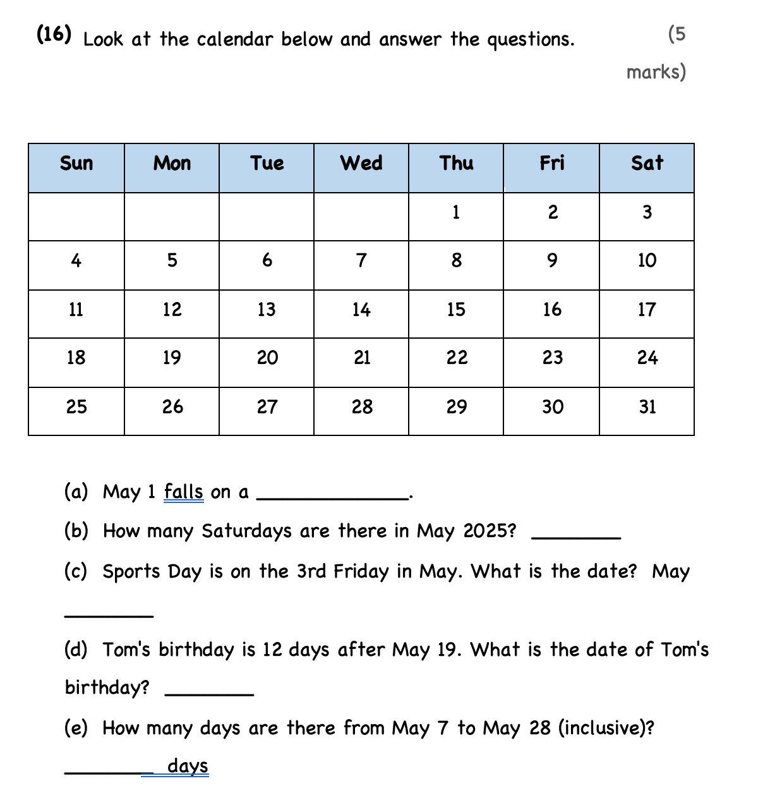
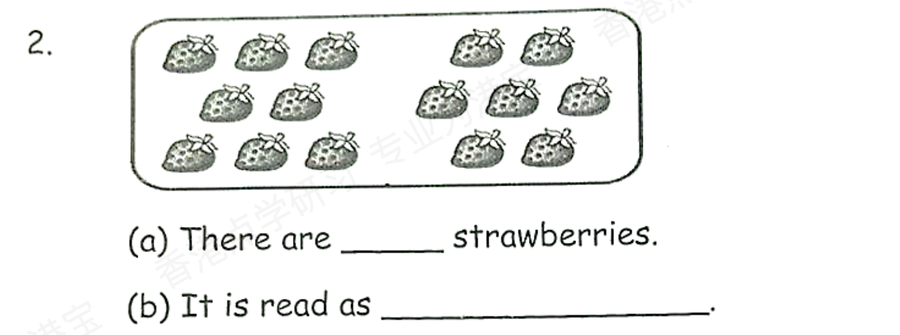

1. When is the summer outing?
A. Monday
B. Tuesday
C. Wednesday
A. Monday
B. Tuesday
C. Wednesday
Answer:
已掌握
| # | 中文意思 | 例句/提示 | 英文默写 | 已掌握 |
|---|---|---|---|---|
| noun 名词 | ||||
| 1 | 明信片 | I sent a to my friend. | ||
| 2 | 教堂 | The old is quiet. | ||
| 3 | 电影院 | We watch films at the . | ||
| 4 | 小组 | We work in a . | ||
| 5 | 清洁工人 | The works every day. | ||
| 6 | 作家 | The writes stories. | ||
| 7 | 火车；训练 | I can use in class. | ||
| 8 | 斑马 | I can use in class. | ||
| verb 动词 | ||||
| 9 | 定位 | We can the place on the map. | ||
| 10 | 感觉 | I happy today. | ||
| preposition 介词 | ||||
| 11 | 在……之后；在……后面 | The cat is the box. | ||
| phrase 短语 | ||||
| 12 | 摆餐具 | I before dinner. | ||
| 13 | 等一下 | , please. | ||
| noun phrase 名词短语 | ||||
| 14 | 小学生 | I am a . | ||
| adjective 形容词 | ||||
| 15 | 口渴的 | I am after running. | ||
| 16 | 流行的 | I can use in class. | ||
| 17 | 困难 | This question is . | ||
| conjunction/preposition 连词/介词 | ||||
| 18 | 像；正如 | Do your teacher says. | ||
| possessive adjective 物主代词 | ||||
| 19 | 他们的 | bags are blue. | ||
| verb phrase 动词短语 | ||||
| 20 | 去徒步 | We on Sunday. | ||
| # | 单词/词组 | 中文意思 | 例句/说明 | 已掌握 |
|---|---|---|---|---|
| adjective 形容词 | ||||
| 1 | dangerous | The road is dangerous. | ||
| 2 | excellent | Your work is excellent. | ||
| 3 | thick | This book is thick. | ||
| noun 名词 | ||||
| 4 | riddle | I can solve the riddle. | ||
| 5 | pronoun | He is a pronoun. | ||
| 6 | fin | A fish has a fin. | ||
| 7 | housewife | The housewife is cooking. | ||
| 8 | dust | I can use dust in class. | ||
| 9 | shelf | I can use shelf in class. | ||
| 10 | blog | I can use blog in class. | ||
| 11 | Carnival | We will go to the Carnival on Sunday. | ||
| 12 | pond | There is a small pond in the park. | ||
| 13 | clinic | The doctor works in a clinic. | ||
| 14 | court | We play on the court. | ||
| 15 | stadium | The game is in the stadium. | ||
| 16 | musical | I can use musical in class. | ||
| 17 | moral | The story has a moral. | ||
| 18 | kind | A dog is a kind of animal. | ||
| noun phrase 名词短语 | ||||
| 19 | department store | We shop at the department store. | ||
| verb 动词 | ||||
| 20 | celebrate | We celebrate my birthday. | ||
| 21 | locate | We can locate the place on the map. | ||
| 22 | weigh | We weigh the bag. | ||
| 23 | collect | I collect stamps. | ||
| 24 | save | We can save the bird. | ||
| 25 | chase | The dog may chase the ball. | ||
| preposition 介词 | ||||
| 26 | behind | The cat is behind the box. | ||
| noun/verb 名词/动词 | ||||
| 27 | survey | We do a survey in class. | ||
| 28 | exercise | Exercise is good for health. | ||
| adjective/noun 形容词/名词 | ||||
| 29 | round | The ball is round. | ||
| verb/noun 动词/名词 | ||||
| 30 | guess | I can guess the answer. | ||
| # | 中文意思 | 例句/提示 | 英文默写 | 已掌握 |
|---|---|---|---|---|
| time/date 时间日期 | ||||
| 1 | 二月 | is the second month. | ||
| 2 | 六月 | is the sixth month. | ||
| 3 | 星期六 | is a weekend day. | ||
| time unit 时间单位 | ||||
| 4 | 分 | A has 60 seconds. | ||
| directions 方向 | ||||
| 5 | 西 | The sun sets in the . | ||
| numbers 数字 | ||||
| 6 | 4 | is 4. | ||
| 7 | 11 | is 11. | ||
| 8 | 12 | is 12. | ||
| 9 | 15 | is 15. | ||
| 10 | 17 | is 17. | ||
| 11 | 千 | One is 1000. | ||
| ordinal numbers 序数 | ||||
| 12 | 第二 | This is the shape. | ||
| 13 | 第三 | This is the shape. | ||
| solid shape 立体图形 | ||||
| 14 | 圆柱 | A has two circular faces. | ||
| plane shape 平面图形 | ||||
| 15 | 长方形 | A has four right angles. | ||
| # | 单词/词组 | 中文意思 | 例句/说明 | 已掌握 |
|---|---|---|---|---|
| operations 运算 | ||||
| 1 | addition | Addition means putting numbers together. | ||
| 2 | subtraction | Subtraction means taking away. | ||
| 3 | altogether | How many are there altogether? | ||
| 4 | be left | How many apples will be left? | ||
| geometry 几何 | ||||
| 5 | grid | A grid helps us find positions. | ||
| 6 | parallel | Parallel lines never meet. | ||
| question word 题目词 | ||||
| 7 | compare | We compare two numbers. | ||
| 8 | estimate | Estimate the answer first. | ||
| 9 | onwards | Count onwards from 20. | ||
| 10 | backwards | Count backwards from 20. | ||
| 11 | match | Match the number to the word. | ||
| 12 | respectively | Tom and Ben have 2 and 3 books respectively. | ||
| shape 形状 | ||||
| 13 | circle | Draw a circle around the answer. | ||
| answer 答案 | ||||
| 14 | answer | Write the answer in the box. | ||
| time/date 时间日期 | ||||
| 15 | leap year | A leap year has 366 days. | ||
| 16 | common year | I can read common year in a math question. | ||
| position 位置 | ||||
| 17 | behind | The bag is behind the chair. | ||
| 18 | below | The box is below the table. | ||
| 19 | above | The clock is above the board. | ||
| operations calculation 运算 | ||||
| 20 | equally | Share the apples equally. | ||
| currency money 货币 | ||||
| 21 | dollar | One dollar has 100 cents. | ||
| 22 | exchange | We exchange money at the counter. | ||
| 23 | pay for | I pay for the book. | ||
| measurement 测量 | ||||
| 24 | measure | We measure the length with a ruler. | ||
| geometry tool 几何工具 | ||||
| 25 | set square | A set square helps us draw angles. | ||
| 26 | geo-strip | A geo-strip can help make shapes. | ||
| 句型结构 | ||||
| 27 | Angle ... is larger than Angle ... | Angle A is larger than Angle B. | ||
| 28 | Angle ... is the largest. | Angle A is the largest. | ||
| 29 | Angle ... is the smallest. | Angle B is the smallest. | ||
| 30 | ... is to the west of ... | The bank is to the west of the school. | ||



